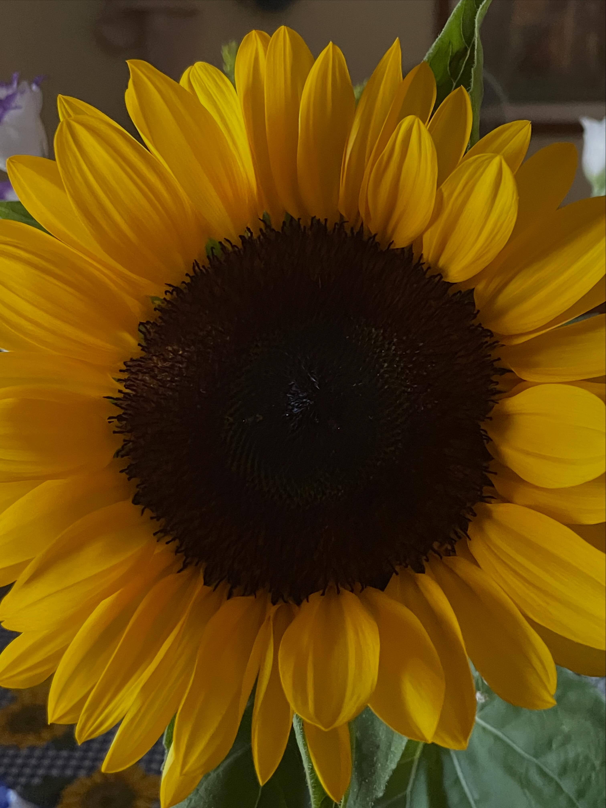

Summer 2026

The past couple of weeks have been unusually full of things I wanted to write down. A frustrating JLPT registration sent me down a rabbit hole about high-traffic systems. Starting on a new project made me rethink how I use AI when I’m trying to understand an unfamiliar codebase. And after DotDev, Shopify's annual developer event in Toronto held in July, I finally had time to write about some of the Liquid changes Shopify announced.
I also started an intensive JLPT N3 prep course on Saturdays, which feels very much like part of the same story: working, learning, and trying to make sense of life as an engineer in Japan.
What I wrote
What I’m learning
- JLPT N3 preparation
- Full-stack application architecture
- AI-assisted codebase exploration